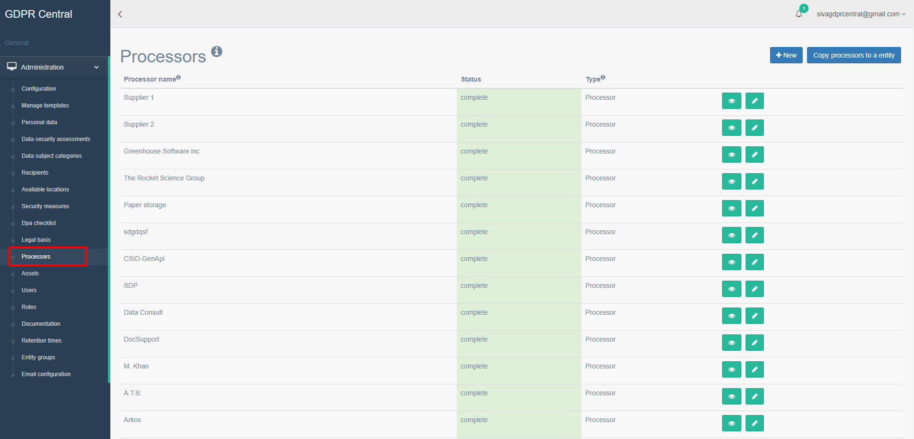
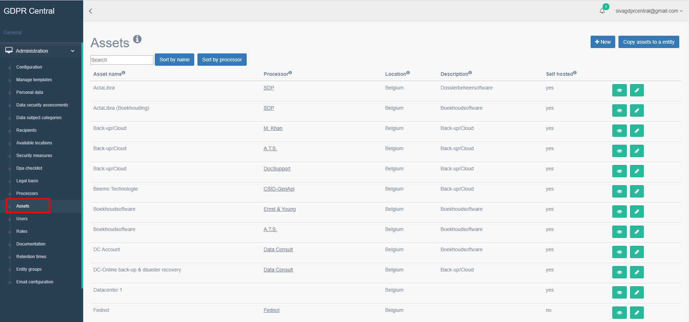

How do I add processors and assets to GDPR Central?¶
Understanding Processors and Assets¶
Processors are the companies that process the information on your behalf. For example, if your company uses Salesforce CRM, then Salesforce.com (the actual company) will be the processor in this case.
Assets are the actual software tool(s) that performs the information processing on your behalf. In our example, Salesforce CRM (which is the actual software tool from Salesforce.com which will process the customer information for you) will be the asset.
You can add a Processor in GDPR Central by performing the following steps:
Login to GDPR Central using your credentials if not already logged in.
In the left pane, under your organization, click Processors.
A list of all Processors for the customer are listed along with their statuses and type. A processor can be of the type processor or other.
Note
Only actions related to those processors of the type processor will be included in action lists.
Click New button to add a new processor.
The New Processor page appears.
Processor Screen Details¶ Field
Description
Name
Enter the name of the processor
Tel
Enter the telephone number of the processor
Email
Enter the e-mail address of the processor
Street
Enter the street name of the processor
Zip Code
Enter the zip code of the processor
City
Enter the city of the processor
Processing Agreement Clauses
If a DPA is added as required in the Dpa setting under Administration, then this field will give you an option to confirm that DPA Agreement is present and signed
Data breach notification time
Enter the maximum time it will take the supplier to alert a possible data breach
Contract termination date
Enter the end date of contract with this processor
Is Processor
Uncheck this option if this processor is not a third-party tool. For example, if you have documents stored in your desk in your office, your office becomes the processor and not a third-party in this case
Click Save to save this processor information.
You can add an asset in GDPR Central by performing the following steps:
Login to GDPR Central using your credentials if not already logged in.
In the left pane, under your organization, click Assets.
A list of all assets for the customer along with information on their name, processor, location, description, and if they are self-hosted are listed.
Click New button to add a new asset.
The New Asset page appears.
Asset Screen Details¶ Field
Description
Name
Enter the name of the asset
Security classification
Enter the security level of the asset. It can either be High, Medium, or Low
Description
Enter an in-depth description of the asset and its use
Self-hosted
Select if the entity hosts the application or data in its own offices or data center (on-premises)
Processor
Select the processor delivering this asset if this has not already been selected
Hosted in
If using a cloud solution, select the country where the asset is hosted. This is important because there are different safeguarding options depending on the country where this is hosted
Appropriate safeguards for international data transfer
Depending on the country where the asset is hosted, appropriate safeguards must be in place, under which data transfer can be allowed. Example EU-US privacy shield
Security measures
Select the appropriate security measures to be applied for this asset
Click Save to save this asset information.
Note
You can also add assets directly from the New Processors page. If you add assets from this page, then the processor is auto selected for you.